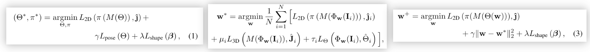

SMPL 完全攻略 -- 从定义到文章到部署
Overview
- SMPL主要含有两组参数，一组是人物的体态信息β，一组是人物的姿态信息θ。
- SMPL本身是“相对的”，其只包含人物本身的信息，而不包含任何与环境、相机视角、位置等信息。另外，其mesh点记录的值是相对于模板人类模型标准值的。
- SMPL不包含手、脸和衣服，但后续的其他文章逐渐完善了相应参数。
- SMPLX中的参数某种程度上包含了肌肉随动作（Pose）变化的信息。他们采用了铰链模型，并搭配PCA方法分析主要关联项，得到了当人体从静态到某个特定Pose时哪些肌肉会发生形变以及如何形变的信息，而其NB也主要NB在这里。有了这些关联模型，人体运动时重建的mesh就不是那种被奇怪地拉伸的mesh了，而是更加符合人体肌肉运动规律的mesh。
- 他们使用的训练数据是4维扫描，即
3D Mesh + Time的扫描。他们也正是通过分析关节点和mesh随着时间的变化，才分析得到了Pose和Mesh变形之间的相关性。 - 在构建MONO/SMPL+H时，由于手非常复杂且容易被遮挡，另外在全身扫描时手部分辨率也很有限，所以他们特意为了手部额外采集了一个数据集，含有各种人物、姿态和遮挡。
名称辨析
SMPL: A Skinned Multi-Person Linear Model。人体模型。MONO: A hand Model with Articulated and Non-rigid defOrmations。手部模型。SMPL+H: A fully articulated body and Hand model。手部模型+人体模型。SMPL-X: SMPL eXpressive，是一个含有姿态、表情、手部动作的人体模型。SMPLify-X：SMPL-X原文中提到的用于拟合SMPL-X模型的一种方法。具体操作是先预测2D Joints，再用Optimization的方法拟合3D模型使得投影与2D Joints尽可能重合。SMPLify：SMPLify-X的前辈。方法类似，但是效果和速度差一点。
3D模型制作和运用中常用术语
- 顶点（vertex）：动画模型可以看成多个小三角形（四边形）组成，每个小三角形就可以看成一个顶点。顶点越多，动画模型越精细。
- 骨骼点：人体的一些关节点，类似于人体姿态估计的关键点。每个骨骼点都由一个三元组作为参数去控制（可以查看欧拉角，四元数相关概念）
- 骨骼蒙皮（Rig）：建立骨骼点和顶点的关联关系。每个骨骼点会关联许多顶点，并且每一个顶点权重不一样。通过这种关联关系，就可以通过控制骨骼点的旋转向量来控制整个人运动。
- 纹理贴图：动画人体模型的表面纹理，即衣服裤子这些。
- BlendShape：控制动画角色运动有两种，一种是上面说的利用Rig，还有一种是利用BlendShape。比如：生成一种笑脸和正常脸，那么通过BlendShape就可以自动生成二者过渡的动画。这种方式相比于利用Rig，可以不定义骨骼点，比较方便。
- 蒙皮：将模型从一个姿态转变为另一个姿态，使用的转换矩阵叫做蒙皮矩阵。（Linear Blend Skinning算法）
- 顶点权重(vertex weights)：用于变形网格mesh
- uv map：将3D多边形网格展开到2D平面得到 UV图像
- texture map：将3D多边形网格表面的纹理展开到2D平面，得到纹理图像
- 拓扑(topology)：重新拓扑是将高分辨率模型转换为可用于动画的较小模型的过程。两个mesh拓扑结构相同是指两个mesh上面任一个三角面片的三个顶点的ID是一样的（如某一个三角面片三个顶点是2,5,8；另一个mesh上也必有一个2,5,8组成的三角面片）
- linear blend skinning algorithm
每个关节的数据结构包含：关节名字、骨骼中其父节点的索引、关节的绑定姿势之逆变换（蒙皮网格顶点绑定至骨骼时，关节的位置、定向及缩放）
三种类型的SMPL文章/应用
- 提出SMPL这种模型本身的定义的文章。这些文章使用大量不同动作的3D人体扫描构筑了一个平均人类模型（Male，Female，Neutral），且定义了当人物的形体和动作发生特定变化时表皮的相应变形方式。文中的“训练”指的是训练这些运动/形态参数与实际表皮形变的函数映射。
- 使用单张/多张不同角度照片来推理相应人物的SMPL模型位置。如SMPLify和SMPL-X。SMPLify-X（用于拟合SMPL-X模型的方法）的pipeline是：
- 先自下而上用OpenPose预测人体2D关键点。
- 然后再结合各种Prior（身体姿态、手部姿态、身体形状、面部姿态、面部表情、极端弯曲）和各种Loss Punishment（2D与3D在平面投影的Loss，身体Parts互相穿透的Loss）去让3D的模型拟合这些关键点。
- 用了Optimization算法直接去拟合的3D模型参数，这个步骤没有使用深度学习。相反，使用的是Limited-memory BFGS optimizer (L-BFGS)的强化Wolfe line search（SMPL-X）、Chumpy+OpenDR（SMPLify）。
- 端到端的深度学习文章。这些文章都是在SMPL-X发表之后涌现出来的。文章中不再使用Optimization-based methods，而是转而使用SMPLify-X来通过照片或多角度照片生成Ground Truth，制造完数据集后直接使用DL进行预测。
SMPL
SMPL一文与从图片/视频/XXXX预测人体形态没有任何关系，它的贡献单纯是提出了一个更好的人体模型，而这个模型可以很好地建模人的体态和姿势，同时肌肉/蒙皮形状会随着人的运动而相应变化，从而达到拟真的效果，而不会出现滑稽的拉伸形变。
SMPL提出的人体模型的输入是由两部分组成的：
- β：一个10维vector
- θ：一个3(K+1)维vector，K是骨架节点数，这里是23。加的1是人体中心。
SMPL的输出是N个顶点的坐标，维度为3N。N: 顶点数，6890。
SMPL人类模型是可微分的，也就是说，如果你有了人物的3D扫描，想用一个deep learning model来预测这个扫描，你可以直接输入图片/视频/XXXX，中间输出是\(\beta+\theta\)，然后最终输出N个顶点的位置，而这N个顶点你是可以直接去和GT做L1 loss的，因为可微也就意味着可以auto backward。
\(\beta\)的十个参数物理意义：
0 代表整个人体的胖瘦和大小，初始为0的情况下，正数变瘦小，负数变大胖（±5） 1 侧面压缩拉伸，正数压缩 2 正数变胖大 3 负数肚子变大很多，人体缩小 4 代表 chest、hip、abdomen的大小，初始为0的情况下，正数变大，负数变小（±5） 5 负数表示大肚子+整体变瘦 6 正数表示肚子变得特别大的情况下，其他部位非常瘦小 7 正数表示身体被纵向挤压 8 正数表示横向表胖 9 正数表示肩膀变宽
论文核心图的解释：
- (a)是平均人体模型，男女各一个，后续的演算都是基于标准平均人体模型的
- (b)是加入了人物体态参数的结果
- (c)是加入了特定动作发生时肌肉/蒙皮变形补偿后的结果。注意此时只是对即将发生的动作进行补偿，但还没有真正apply动作。
- (d)是实际让人物摆出了相应动作的结果
再回到上图的一些重要符号表达，
\(\bar{T}\): 3N维vector，由N个串联的顶点表示的初始状态下的平均模型。这里的3并不是xyz 3D坐标，而是每个关节点相对于其父关节的轴角旋转量。这里的坐标以父节点为原点。
\(\omega\) denotes the axis-angle representation of the relative rotation of part k with respect to its parent in the kinematic tree
\(\mathcal{W}\) : \(4\times 3N\)维，其实应该是\(K\times 3N\)维才对，但为了和现存渲染引擎同步，这里取每个顶点最多被附近4个关节点的运动影响。\(\mathcal{W}\)是LBS/QBS混合权重矩阵。由于顶点和其附近的关节点存在相关性，这个相关性是每个顶点对应多个关节点，且权重不一。这里就需要这样一个矩阵来记录这种相互关系，即关节点对顶点的影响权重 (第几个顶点受哪些关节点的影响且权重分别为多少)。
\(J\) : 用于补偿joint position因为目标人物体态变化产生的位移。它通过表皮的形状位置来推测新的joints位置。
\(B_S(\overrightarrow{\beta})\)里面的这个\(B_S\)的作用是把已经经过PCA筛选压缩过的10个参数恢复到正常的3N维度，即对于每个顶点，应当向哪个方向变化来适应这个人的体态。这里恢复出来的值也是相对于平均模型的。
\(B_S(\overrightarrow{\theta})\)同理，由于我们输入的pose \(\overrightarrow{\theta}\) 也只有3(K+1)维度，而想要对因为人体做出特定动作产生的形变进行补偿，也需要一个3N维度的值来对每个顶点分别建模补偿。
而关于训练，训练过程中对于形态和姿势的训练时分开进行的。前者在一个
Multi-Shape Dataset上训练完成，而后者在一个Multi-Pose Dataset上训练完成，二者是相互独立的。模型训练主要训练的是这些参数：形态的\(\bar{T}, \mathcal{S}\)和姿势的参数\(\mathcal{J},\mathcal{W},\mathcal{P}\)。除去上面介绍过的\(\bar{T},\mathcal{W}\)，其他几位的介绍如下
- \(\mathcal{J}\): \(3N\times 3K\)，将rest vertices转换成rest joints 的矩阵。
- \(\mathcal{P}\): 矩阵形状为\(3N\times 9K\)，这里之所以K前面系数是9，是因为使用时把关节点的坐标从3D空间坐标处理成了其相对于根节点的旋转矩阵，而3D旋转矩阵有9个参数。\(\mathcal{P}\)是这所有27*9=207个 pose blend shapes 组成的矩阵。因此，pose blend shape 函数BP(θ→;P) 完全被矩阵 P 定义。
模型本身使用说明
- 模型本身在Python中的使用是相当简单直接的：
Load Model -> Assign β&θ ->Dump - Dump出来的pkl模型可以直接在Blender/Unity等软件中读取，应用到SMPL模型中。
SMPL-X
- SMPL-X其实是一个大杂烩，它结合了基本姿态用的SMPL模型，手部姿态的MANO模型和面部特征的FLAME模型。
- SMPL-X模型本身分别在多个数据集上训练：
- \(\{S\}\)：形状空间参数（shape space parameters），在3800个A-pose捕捉不同性别的变化的数据集上训练
- \(\{W，P，J\}\) ：身体姿态空间参数（body pose space parameters），在1786个不同姿态的数据集上训练
- MANO：姿态空间及姿态相关混合形状（pose space and pose corrective blendshapes），1500 手部扫描数据
- FLAME：表情空间\(\{\varepsilon\}\)（expression space），3800 头部高精度扫描数据上训练
- SMPL-X区分了男女模型，用了一个性别分类器。
- Pipeline（上文有提）：
- 先自下而上用OpenPose预测人体2D关键点。
- 然后再结合各种Prior（身体姿态、手部姿态、身体形状、面部姿态、面部表情、极端弯曲）和各种Loss Punishment（2D与3D在平面投影的Loss，身体Parts互相穿透的Loss）去让3D的模型拟合这些关键点。
- 用了Optimization算法直接去拟合的3D模型参数，这个步骤没有使用深度学习。相反，使用的是Limited-memory BFGS optimizer (L-BFGS)的强化Wolfe line search（SMPL-X）、Chumpy+OpenDR（SMPLify）。
- 既可以用于从2D joints coordinates得到SMPL-X，也可以通过3D joints coordinates得到，如论文“I2l-meshnet: Image-to-lixel prediction network for accurate 3d human pose and mesh estimation from a single rgb image” 中，作者就通过SMPLify-X得到了H3M数据集的SMPL版本。
已有数据集转化
- 带有图片和2D Human Joints Label的数据集：使用SMPLify-X，或EFT。
- 带有图片和3D Human Joints Label的数据集：使用multiperson库中的SMPLify-X-for-3D工具.
- 带有图片和多视角2D Human Joints Label的数据集：使用SMPLify
- 只有图片：使用EFT。
动作的生产/转化/导入
- 我们已经将相关github repo打包成了docker，可以直接一键部署使用。具体链接和详细教程后续整理后更新。
Other Papers
在看完上面几篇最重要的鼻祖论文之后，下面是几篇最近的使用了SMPL系统的文章，通过对他们的分析可以对SMPL的应用有一个更好的理解。
Object-Occluded Human Shape and Pose Estimation from a Single Color Image
数据采集：
- 他们先用Mask-RCNN和Alphapose来预测人体Mask及2D Joints。
- 对于不准确的label，他们手动矫正。
- 最后用SMPLify-X中的多视角方法得到GT。
- 得到GT后，他们把这个3D SMPL模型朝着图像平面投影，若投影不在Mask覆盖范围内（即被遮挡），那就给涂黑（-0.5），反之，用表面xyz构建3通道UV Map。
数据处理：
- 文中预测的基本单位是顶点（即表面上的全部点）而非骨骼、joints。
- UV Map看上去是彩色的，这个颜色其实意味着UV Map有三个通道，而这三个通道是相应每个点所对应的x、y、z坐标值。
- 其中，对于未被遮挡的点（Mask点亮的点），把xy给norm到\([-0.5,0.5]\)即可；而对被遮挡的点，其xyz是\([-0.5,-0.5,-0.5]\)，即全黑（以-0.5为黑）。
Pipeline：
- Pipeline分为两部分，Train和Predict。
- Train会先训练一个UV Map Inpainting Network。把之前处理过的、过了norm且遮挡部分给涂黑的UV Map给送到一个网络里，试图输出被涂黑区域得以被重新预测的UV Map。这就把3D SMPL HPE转成了一个image inpainting问题，即填补空缺部分图像。
- Predict过程中，会先预测Mask，然后直接concatenate共同作为输入。
- 然后RGB Image预测全体UV Map时候用的是另一个完全不同于训练时UV Map Inpainting Network的branch，但是在这个branch里，Inpainting Branch的高维度feature被拿了进来作为constrain。这里说的不清楚，应该是把这个feature map concatenate到RGB image过了Encoder之后的feature map上作为prior。需要参考代码理解。
Points：
UV Map Inpainting Sub-Network的Loss由三部分构成：
首先是预测的UV Map和GT UV Map的L1 Loss。
然后是一个挺有趣的term，用于保证人体的每个部位预测出的UV Map是平滑的：对每个点计算一个它与其下方和右方点的差的绝对值。然后通过最小化这个值，保证预测的UV Map的平滑性。\(L_{tv}=\sum_{k}\sum_{(i,j)\in R_k}(|P_{i+1,j}-P_{i,j}|+|P_{i,j+1}-P_{i,j}|)\)。其中\(R_k\)是第k个身体部位对应的区域。
最后是关于人体各部位交界处的点。这些点在多个部位的UV Map上都有坐标。这个loss term旨在计算这些点在所有UV Map上的均值与GT的L1 Loss，以保证交界点处的值也平滑。
他们把3D点投影成2D时用了weak perspective projection弱透视投影。
速度相较于基于优化的SMPLify-X快得多，从30s降低到了13ms。
他们也用了已有的数据集+Occlusion的方式在多个数据集上得到了结果，加遮挡的方式值得学习。
Monocular, One-stage, Regression of Multiple 3D People
Idea: 本文的中心思想是用单张图像解析生成图中的多人SMPL模型。
Questions:
- 2D label的数据集可以通过EFT（Exemplar Fine-Tuning for 3D Human Model Fitting Towards In-the-Wild 3D Human Pose Estimation）生成，但那些只有3D joints coordinates但没有SMPL的数据集是怎么用上的？
Pipeline:
- 首先过一个Backbone提取feature map。
- 然后这个feature map被送到三个branch中，它们分别用来预测：
- 人体中心位置的热力图\(C_m\in R^{1\times H \times W}\)。它预测的是2D的人体中心位置。
- 相机参数map \(A_m\)。这里的\(A_m\)形状是\(R^{3\times W\times H}\)，它的意义是：如果图片上某个pixel是某个人体中心的话，对应的这个人的相关相机参数。每个pixel预测的相机参数含有三个值，分别是\((s, t_x, t_y)\)。\(s\)是scale，包含了人的body size和depth。而\(t_x\)和\(t_y\)则是投影相对图片中心在x和y方向上的移动距离。\(t_x, t_y \in (-1,1)\)，被normalized过。
- SMPL map \(S_m\)。这个和\(A_m\)类似，也是假定每个pixel上都有一个可能的人体中心，然后这个人对应的SMPL参数。形状为\(R^{142\times H\times W}\)。对于每个pixel，其中10个参数是shape，132个是pose。
- 上面整个过程可以概括为：知道人大致在哪->知道这个位置的人的位移和scaling->知道这个人的形状和pose。
Points:
Collision-aware representation: 基于中心的方法往往使用的是bbox的中心，而这个中心在人体中并没有实际意义，且容易落到人体外部。本文选择了计算未被遮挡的人体躯干的几个点的均值作为中心点。如果躯干点都被遮挡了，就计算全部可见joints的中心点。
We define the body center as the center of visible torso joints (neck, left/right shoulders, pelvis, and left/right hips).
Multiple-human same-center情况的处理：使用类似于正正离子相互排斥的概念，让相近的两个人体中心尽可能远离彼此。
Exemplar Fine-Tuning for 3D Human Model Fitting Towards In-the-Wild 3D Human Pose Estimation
Idea: 3D HPE的野外数据和2D不同，很难取得。本文旨在利用已有的大规模2D数据集，通过高质量的优化匹配得到对应的3D labels，进而辅助训练。
Questions:
- 本文拟合的是SMPL还是3D骨架
- 拟合的是SMPL，3D坐标是SMPL pose parameter \(\theta\) 的计算后的结果。
- 本文与SMPLify-X有何不同
- SMPLify-X只是一种单纯的fitting-based method，而本文则是结合了fitting和regression二者。
- 有哪些文章使用了其公开的3D SMPL数据labels
- prior terms到底长什么样？怎么用到计算循环中的？
- 本文拟合的是SMPL还是3D骨架
Pipeline：EFT方法是优化方法与回归方法的结合。具体操作是先正常训练一个神经网络，让它从2D坐标和输入图像预测对应的3D坐标。回归方法到这里就结束了，但EFT这才刚刚开始。EFT针对每一个图片实例，再得到神经网络的预测结果后，再以这个结果作为起点放到fitting method中去进一步优化，并且设定了一个限制就是新的优化后的神经网络权重\(w\)与训练好的最佳权重\(w^*\)之间差距不能太大。值得注意的是，这个优化后的权重\(w^+\)仅服务于这一张图，用完就扔了。
Points：
从2D坐标得到3D位置有两种做法：基于优化（fitting）的方法和基于回归（regression）的方法。前者通过构建多个Loss惩罚项、结合多种prior来逐步得到最能满足限制条件的3D坐标，而后者则直接通过深度网络来一步到位预测。
而本文提出的EFT则是结合了上面两种方法的方法。
 上面三组公式分别是优化法、回归法，及EFT的公式。
\(\Theta\)代表SMPL模型的全部参数，其中，\(\theta,\beta\)分别代表pose（以铰链夹角的形式展现）和shape参数。\(J\)是3D location，\(\hat{J}\)是2D location，\(\pi\)是Projection matrix，用于把3D坐标投影到图像的2D平面，\(M\)用于把SMPL参数转换为absolute 3D坐标。\(L_{pose}、L_{shape}\)分别是pose、shape的prior。\(\Phi\)是神经网络,\(w\)是神经网络的权重。\(I\)是输入图片。其中，\(\Theta{w}=\Phi_w(I)\)
优化方法的Loss包含三部分：
- 2D Loss
- Pose Prior
- Shape Prior
回归方法的Loss包含三部分：
2D Loss
3D Loss
SMPL Loss
EFT方法的Loss包含三部分：
- 2D Loss
- 进一步优化（fitting）后的神经网络参数与预训练网络的神经网络参数的差距Loss
- Shape Prior
EFT中有个参数\(\gamma\)，这个参数决定了优化后的神经网络参数\(w\)与预训练的\(w^*\)的相似程度。如果\(\gamma\)很大，那么基本这个优化步骤就没用了，因为\(w\)不敢跑远，结果将会和神经网络直接预测出来的结果类似。再fitting-based method中，也有这个\(\gamma\)，作用相似，如果太大的话，得到的结果将会是pose prior的平均pose。
与纯优化方案不同，这里EFT优化的不是\(\Theta, \pi\)，而是神经网络的参数\(w\)。
EFT中没有使用pose prior，因为它假定了神经网络已经隐式地编码了prior。
文章中帮我们跑了这些数据集（2D joints -> SMPL）：
COCO, MPII, LSPet, PoseTrack, and OCHumandatasets。值得一提的是，由于优化方案有最低可见joints限制，所以不符合要求的人物labels已经被删掉了，所以得到的3D标签并非与原来的一一对应。
问题
- 已有的SMPL数据集都是怎么来的，他们是：
- 最重要的几个SMPL数据集？
- AMASS，这个数据集是个整合数据集，把一大堆mocap数据集都给整合进来了，然后用他们自己的Mosh++跑出来SMPL，如果有手部mocap的还会把手部的mesh也进行分别优化。
实践/操作
首先，SMPL有一系列论文，其为：
SMPL：最开始的一篇
SMPL+H：加了手部参数的SMPL
SMPLX：加了面部和手部参数的SMPL
A new, unified, 3D model of the human body, SMPL-X, that extends SMPL with fully articulated hands and an expressive face.
Reference
Papers
- SMPL: Code
- SMPL-X: Original, Multi-View
- Embodied Hands (MANO)
- Object-Occluded Human Shape and Pose Estimation from a Single Color Image